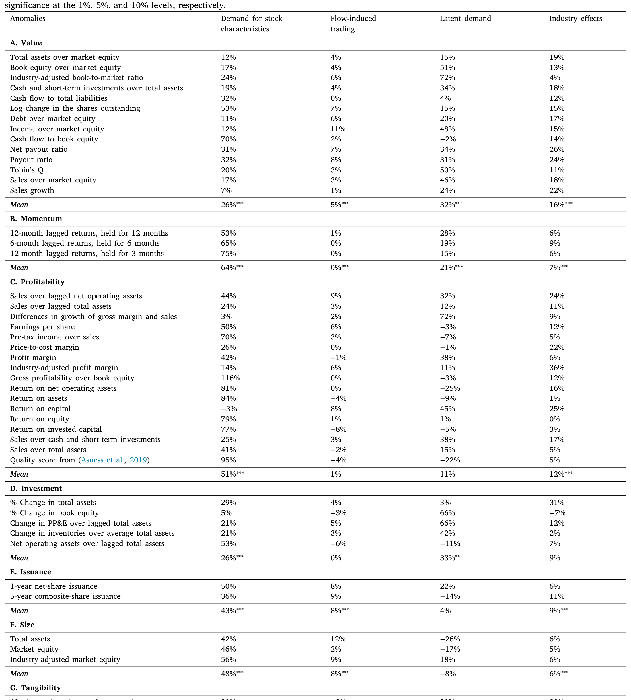
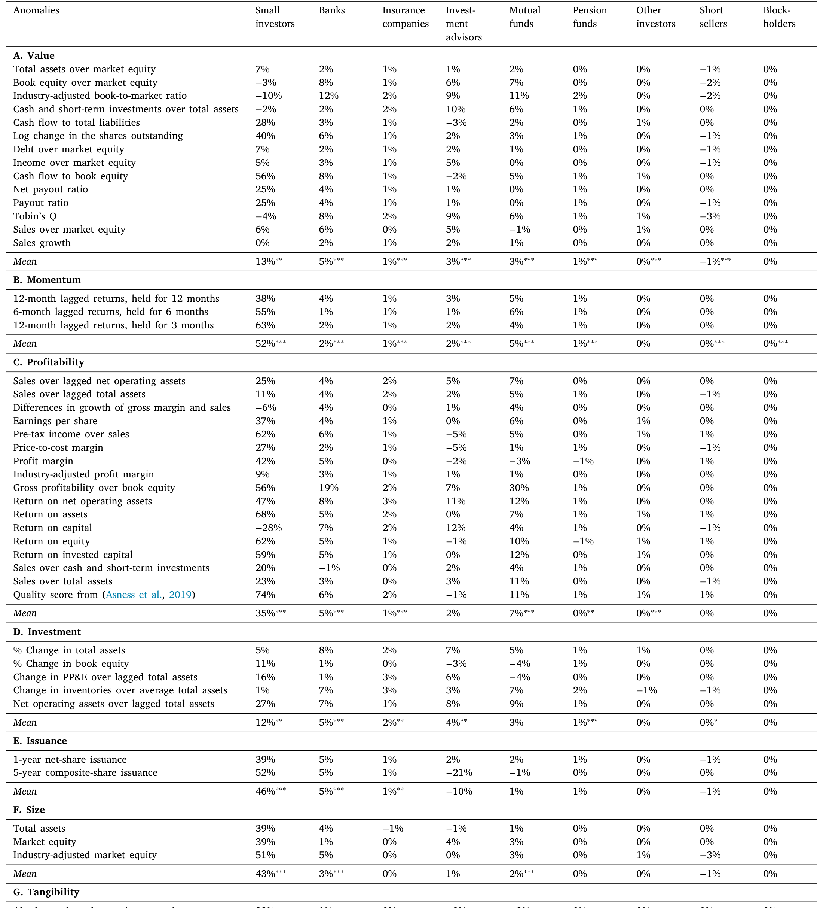
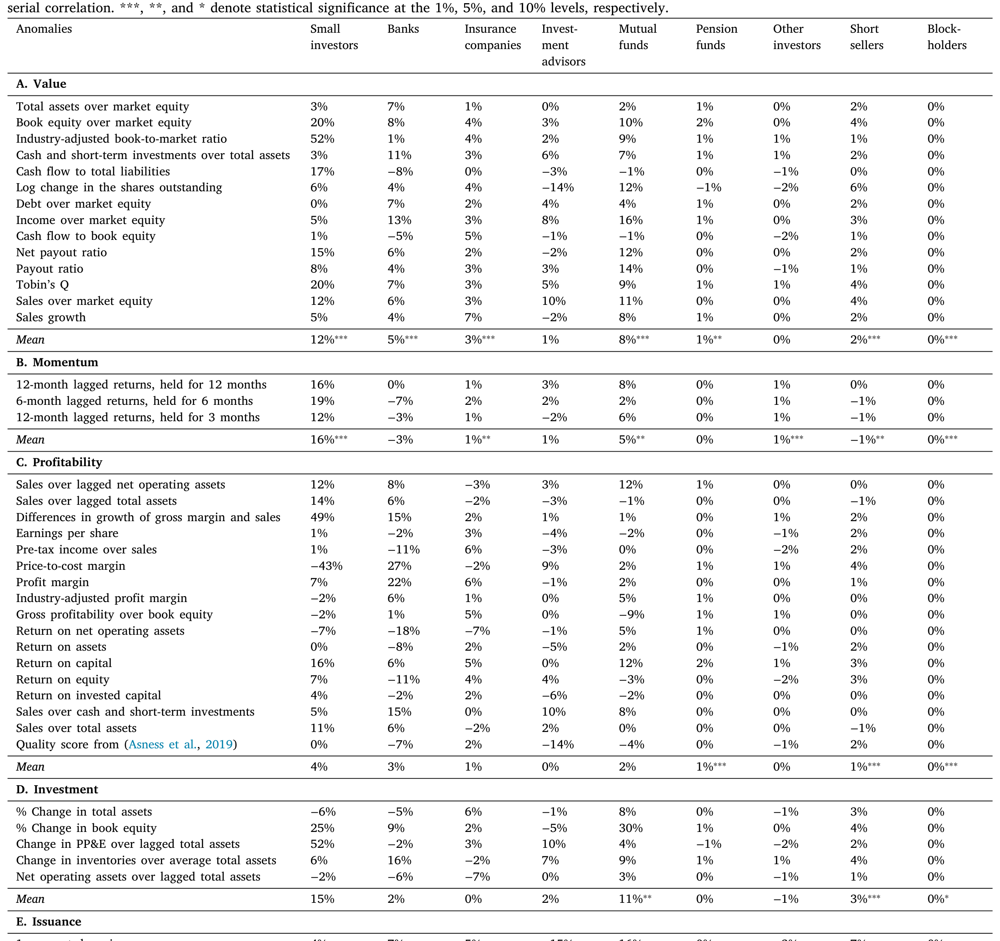
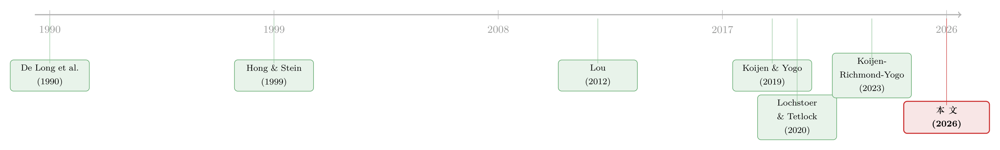

异象收益究竟是谁推动的？——把每一个百分点拆给「投资者」和「动机」
本文读的是 Li, Sokolinski & Tamoni (2026, JFE)：作者把异象（anomaly）收益的时序方差拆解到「谁在交易（投资者类型）×怎样交易（交易动机）」两个坐标上，发现真正的主引擎是基本面驱动的交易（平均解释约 40% 的方差），而这部分又不成比例地由小投资者传导（约 27% 的总方差，相当于基本面那块的三分之二）；机构主导的渠道——资金流与行业偏移——只是次要的、集中在个别异象里的配角。
1 引言：异象很多，但「谁」和「怎样」始终是糊的
资产定价里有一类顽固的现象，叫做异象：那些 CAPM 之类的基础模型解释不了的横截面收益规律——价值、动量、盈利、投资、发行、规模……数十年过去，因子动物园（factor zoo）越养越大（关于这个动物园是怎么冒出来的，可参见《弱替代：因子动物园是从哪里冒出来的？》）。但有一个看似最朴素、却始终没被干净回答的问题悬在那里：这些异象收益，到底是谁推动的？又是通过什么方式推动的？
诚然，关于「为什么」，理论界从不缺答案。问题是，答案太多了，而且彼此打架。
粗略地说，有三个阵营。第一个阵营说这是风险溢价：异象收益是对某种系统性风险的补偿（Berk, Green and Naik, 1999；Zhang, 2005）。第二个阵营说这是机构的资金流在作祟：基金申赎、再平衡、基准压力，被动地把价格推来推去（Lou, 2012；Akbas et al., 2015；Ben-David et al., 2022）。第三个阵营说这是异质投资者的行为偏差：一部分不那么老练的交易者对信息反应过度或不足，理性套利者只能部分纠偏（Barberis, Shleifer and Vishny, 1998；Hong and Stein, 1999；Daniel, Hirshleifer and Subrahmanyam, 2001）。
这三种解释指向的是完全不同的投资者群体和完全不同的交易动机。风险故事大多假设一个代表性投资者；资金流故事的主角是共同基金和投顾；行为故事的主角则是散户。可问题在于——它们从来没有被放在同一把尺子上、用同一套数据做过头对头的比较。以动量为例：一派说它源于不老练投资者的反应不足（Hong and Stein, 1999），另一派说它源于机构资金流诱发的交易（Lou, 2012）。两边都能讲出自洽的故事，但谁的贡献更大？数据里到底谁说了算？过去我们答不上来。
本文最迷人的地方，不是又提出一种新的「异象成因」，而是给所有现有成因建了一个公共的记分牌：把任何一个异象的收益方差，明明白白地分配到「投资者类型 × 交易动机」的每一个格子里，让风险、资金流、行为偏差这三种力量在同一张表里直接比大小。
2 核心思路：两个坐标轴
整篇论文其实只在做一件事，但做得很彻底：把异象收益沿两个维度同时拆开。
- 第一个维度是谁（who）：投资者类型。一边是受 13F 披露约束的主要机构——共同基金、投资顾问、银行、保险公司、养老金；另一边是作者精心定义的「小投资者（small investors）」。
- 第二个维度是怎样（how）：交易动机。作者把投资者的需求拆成四块——对股票特征的需求（基本面驱动，fundamentals-based）、潜在需求（非基本面驱动，non-fundamentals-based / latent demand）、资金流诱发的交易（flow-induced trading），以及一个捕捉跨行业轮动的行业项（industry effects）。
把这两个坐标交叉起来，任何一个异象收益的波动，就被分配进一张「投资者 × 动机」的格子表里。这是一种刻意保持理论中性（theory-neutral）的拆解：作者不预设哪种解释对，而是让数据自己说话，告诉你哪些格子是亮的、哪些是暗的。
但要把「投资者的持仓」翻译成「价格和收益」，光有会计恒等式不够，你需要一个结构模型，让需求的移动能反推出均衡价格的变化。这就引出了本文的方法骨架。
3 模型：一个两层嵌套的需求系统
本文的引擎是一个需求系统（demand system），思路上承袭 Koijen and Yogo (2019) 的开创性工作：每个投资者按股票的价格和特征决定持仓权重，市场出清条件把所有人的需求加总成均衡价格。需求一动，价格就动，收益就动。
本文的方法创新，在于把这个需求系统做成了两层嵌套 logit（two-tier nested logit）结构——外层决定在五大行业（按 Fama–French 5 行业分类：Manufacturing、Durables、Hi-Tech、Health Care 和残差的 "Others"）之间如何配置财富，内层决定在某个行业内部如何在具体股票之间分配。为什么要嵌套，而不用标准 logit？因为现实里资本通常在近似替代品之间轮动——在 Tech 内部腾挪，比在 Tech 和 Utilities 之间跳，要容易得多（Chaudhary et al., 2025）。标准 logit 强加了「跨资产同质替代」的约束，会把弹性估歪；嵌套结构则能容纳这种「先选行业、再选股票」的真实替代模式。
3.1 内层：行业内的股票选择
先看内层。在给定行业 \(\gamma\) 内，投资者 \(i\) 把投给这个行业的钱，按一个 logit 结构分配到各只股票上：
$$ w_{i,t}(n\mid\gamma)=\frac{\exp\{b_{0,i,\gamma,t}+\beta_{0,i,\gamma,t}\,p_t(n)+\beta_{x,i,\gamma,t}^{\top}x_t(n)+\epsilon_{i,t}(n\mid\gamma)\}}{1+\sum_{m\in\mathcal{J}_{i,\gamma}}\exp\{b_{0,i,\gamma,t}+\beta_{0,i,\gamma,t}\,p_t(m)+\beta_{x,i,\gamma,t}^{\top}x_t(m)+\epsilon_{i,t}(m\mid\gamma)\}} $$
这个式子是整篇论文拆解的源头，值得逐项看清楚。下面把它的关键部件标注出来：
请特别注意 a2 和 a3 的分工：系数 \(\beta_{x,i,\gamma,t}\) 乘在可观测特征上，是「基本面」那一块；而残差 \(\epsilon_{i,t}(n\mid\gamma)\) 是模型无法用特征解释的、纯粹的需求冲动，是「非基本面」那一块。本文的四大动机里，前两个就藏在这一个方程里。一个关键细节是：价格系数 \(\beta_0\) 和特征偏好 \(\beta_x\) 都随行业 \(\gamma\) 变化——一个投资者可能在 Utilities 里很在意盈利，在 Tech 里却不那么在意。
把上式写成份额比（share-ratio）的对数形式，估计起来就清爽了：
$$ \ln\frac{w_{i,t}(n\mid\gamma)}{w_{i,t}(0\mid\gamma)}=b_{i,\gamma,t}+\beta_{0,i,\gamma,t}\,p_t(n)+\beta_{x,i,\gamma,t}^{\top}x_t(n)+\epsilon_{i,t}(n\mid\gamma) $$
3.2 把一个行业「压缩」成一个数：包容值
内层估完后，作者用一个巧妙的统计量把整个行业的「菜单」折叠成一个数——包容值（inclusive value）：
$$ \mathcal{I}_{i,t}(\gamma)=1+\sum_{m\in\mathcal{J}_{i,\gamma}}\exp\{b_{i,\gamma,t}+\beta_{0,i,\gamma,t}\,p_t(m)+\beta_{x,i,\gamma,t}^{\top}x_t(m)+\epsilon_{i,t}(m\mid\gamma)\} $$
它恰好等于投资者 \(i\) 在行业 \(\gamma\) 内「外部选项权重」的倒数，\(\mathcal{I}_{i,t}(\gamma)=1/w_{i,t}(0\mid\gamma)\)。直觉上，\(\mathcal{I}\) 越大，说明这个行业里被追踪的股票相对那些「场外」证券越有吸引力。它是行业整体魅力的一个充分统计量——投资者在外层决定给这个行业配多少钱时，只需要看这一个数。
3.3 外层：行业之间的配置，与那个关键的 σ
有了每个行业的包容值，外层决定财富在行业间的分配：
$$ w_{i,t}(\gamma)=\frac{\exp\{\alpha_{i,\gamma}+\eta_{i,t}(\gamma)\}\,\mathcal{I}_{i,t}(\gamma)^{\sigma_{i,\gamma}}}{\sum_{\gamma'}\exp\{\alpha_{i,\gamma'}+\eta_{i,t}(\gamma')\}\,\mathcal{I}_{i,t}(\gamma')^{\sigma_{i,\gamma'}}} $$
这里的 \(\sigma_{i,\gamma}\) 是整个嵌套结构的灵魂——它度量当某行业的包容值上升时，投资者会多么积极地把钱挪过去。它的取值有清晰的经济含义：
- 若 \(\sigma_{i,\gamma}=1\)（对所有行业），系统退化为标准 logit：跨行业替代和行业内替代一样强，Tech 的一个冲击对 Utilities 的影响，等同于对另一只 Tech 股票的影响；
- 若 \(\sigma_{i,\gamma}=0\)，则完全没有跨行业替代，行业之间彻底分割，外层配置与包容值脱钩。
因为「在行业内腾挪」通常比「在不相关行业间跳」容易，经济先验把 \(\sigma_{i,\gamma}\) 摁在开区间 $(0,1)$ 里。估出来的 \(\sigma\) 直接告诉你：一个内层冲击有多少会外溢到其它行业。最后，个股的总权重就是内外两层相乘（这正是嵌套结构的定义）：
$$ w_{i,t}(n)=w_{i,t}(n\mid\gamma)\,w_{i,t}(\gamma) $$
顺带一提，作者用 Herfindahl–Hirschman Index (HHI) 验证了「行业内轮动」确实是主要的替代边际：在 FF-10 分类下，异象组合的平均 HHI 是 22%（相对于 10% 的行业中性基准），收缩到 FF-5 后升到约 31%（相对 20% 基准）。这说明异象组合在行业上是有倾斜的，而调整主要发生在行业内部。之所以停在五个行业而不用十个，是为了保住外层估计的统计功效——FF-10 下许多「投资者×行业」面板的股票数只剩两位数，会让嵌套 logit 的似然函数病态。
4 识别：怎样把「持仓」变成「因果性的价格效应」
模型搭好了，但「拆解」这个动作本身需要一个干净的反事实（counterfactual）。本文的做法非常直接、也非常漂亮：一次只动一个动机、针对一个投资者类型，其余一切按住不动，重新求解市场出清价格，记下由此产生的价格变化。 这个价格效应，就是该「投资者×动机」格子对收益的贡献。逐格做一遍，再把贡献加总，就得到了沿两个维度的完整分配。
这里有一个绕不过去的内生性问题：包容值 \(\mathcal{I}_{i,t}(\gamma)\) 里嵌着当期价格 \(p_t\)，而价格又被同样的需求冲击驱动。直接估 \(\sigma\) 会有偏。作者沿用 Koijen and Yogo (2019) 那个经典的「反事实市场权益（counterfactual market equity）」工具变量：假想其他投资者（剔除 \(i\)、并剥离掉小投资者）在各自的行业投资域内等权持有，由此算出的市场出清价格 \(\hat{p}_t(m)\)，与 \(i\) 自己的需求冲击正交。把 \(\hat{p}_t\) 代回包容值得到预测值 \(\hat{\mathcal{I}}_{i,t}(\gamma)\)，内外两层用同一个价格工具，整套估计就内部一致了。
拿到投资者层面的需求弹性后，剩下的就是把时序方差按经典的方差分解（variance decomposition）算法，归到四个动机、各类投资者头上。这一步的精神，和传统上「把市场收益拆成现金流新闻和贴现率新闻」一脉相承（Campbell, 1991；Vuolteenaho, 2002；Chen, Da and Zhao, 2013；Lochstoer and Tetlock, 2020）——只不过这里换了坐标轴，拆的是「谁」和「怎样」，而不是「现金流」和「贴现率」。
5 数据：「小投资者」是被小心翼翼地抠出来的
识别的可信度，一半压在「小投资者」这个口径的干净程度上。这恰恰是本文在数据工程上最较真的地方。
机构持仓来自 Thomson Reuters Institutional Ownership (S34) 数据库，覆盖 1980–2022 年所有 13F 申报人，按 Koijen and Yogo (2019) 的口径分成六类。难点在于剩下那块「非 13F」的残差——文献里常笼统地叫「家庭（households）」，但这块其实混进了不少非散户的持有人。作者做了三层提纯：
- 剔除非 13F 的大宗持有人（blockholders）：依 Schwartz-Ziv and Volkova (2024) 的方法，从 EDGAR 上的 13D/13G 表识别持股 >5% 的大股东。由于 13D/13G 自 1999 年起才强制，样本最终被限制在
1999–2022，让大股东覆盖与持仓数据对齐； - 剥离卖空者（short sellers）：从 Compustat 取个股层面的卖空兴趣，把借券卖出的负头寸单独成类，不让它们冲抵或污染多头持仓；
- 剩下的，才定义为「小投资者」——非 13F、非大宗、纯多头（long-only）的持有人。
作者对这个口径态度审慎：它不是机械的「100% 减 13F」残差，构造更细，但数据限制仍可能让少量非 13F 机构留在残差里。好在多个「散户倾向」诊断（彩票式收益、特异波动率、公司年龄、换手率）都和这个类型对得上，指向家庭解释。用一个具体的数字感受一下提纯的力度：2021Q4，大股东约占全市场 5% 的持股（样本内 3.3%），卖空者人均每只股票 3.5%；从一块本会被笼统贴上「家庭」标签的 37.5% 残差里，扣掉 3.3%（大股东）和 3.5%（卖空），剩下 30.7% 才算到小投资者头上——这是一个相当保守的分配。
最终，这套方法被应用到 47 个异象组合上，横跨七大类：价值、动量、盈利、投资、发行、规模、有形性（tangibility）。
6 主要结果：基本面是主引擎，而小投资者是传动轴
6.1 第一刀：按「动机」切
第一个核心发现关于怎样交易。把方差按四个动机分配，排序异常稳定、统计上也很紧：
- 基本面驱动的交易是绝对主引擎，平均解释约
40%的异象方差； - 非基本面驱动是第二层，约
20%； - 行业效应更温和，约
13%； - 资金流诱发的交易平均只有约
3%——注意，是平均只有 3%。
这个排序在各类异象里有所起伏：基本面在动量、盈利、规模里独大；非基本面在基本面退场的地方（尤其是价值和投资）顶上来；资金流主要在规模和发行里露脸；行业效应在价值和有形性里达到峰值。如表 1 所示，这种「按动机分配」的全景一目了然——四列正好对应四个动机。

Table 1
这一刀切下去，那个流行的「机构资金流推动异象」的叙事，立刻被摁到了次要位置：平均 3% 的贡献，实在称不上主角。
6.2 第二刀：按「投资者」切
第二个核心发现关于谁在交易，也是更出人意料的一刀。把基本面那 40% 再沿投资者拆开，小投资者一家就传导了其中约 27% 的总方差，相当于基本面那块的三分之二。换句话说，异象收益里最大的那块引擎，主要是被「散户」踩下去的。如表 2 所示，在基本面渠道里，小投资者的份额在动量类高达 52%、发行类 46%、规模类 43%、盈利类 35%，全面压过任何单一机构类型。

Table 2
更有意思的是非基本面那一层。直觉上你可能以为「非基本面 = 机构的噪声交易」，但数据给出的是相反的画面：小投资者同样是非基本面层的最大单一贡献者，约 7%，对比之下共同基金只有 5%、银行 3%。如表 3 所示，潜在需求（latent demand）渠道在价值、动量等类别里，依然是小投资者的份额最高。

Table 3
那机构去哪了？它们出现在该出现的地方：13F 投资者整体拿走了行业边际的大头（平均约 8%，对比小投资者的 3%）；而资金流这个渠道，则由共同基金和投资顾问扛着。这幅图景干净得近乎对称——散户管基本面和非基本面，机构管行业轮动和资金流。
6.3 再往深一层：这些拆解对应的是现金流，还是贴现率？
到这里，一个自然的问题是：基本面、非基本面这些「动机」，落到经典的资产定价语言里，究竟是现金流新闻（cash-flow news, CF）还是贴现率新闻（discount-rate news, DR）？（关于贴现率为何是资产定价的中心议题，可参见《贴现率：资产定价的中心议题》。）作者顺着 Chen, Da and Zhao (2013) 和 Lochstoer and Tetlock (2020) 的方差分解，把「投资者×动机」的渠道再映射到 CF / DR 上。
两个结果浮出水面。第一，它确认了 Lochstoer and Tetlock (2020) 的核心结论——CF 新闻是异象方差的主导来源，平均解释约 62%；但本文把这个结论磨得更细：这 62% 的 CF 驱动里，近一半可归到小投资者头上，与「不老练交易者对公司层面信号做出反应、有时甚至误读」的异质投资者机制（Barberis, Shleifer and Vishny, 1998；Daniel, Hirshleifer and Subrahmanyam, 2001）吻合。第二，非基本面那一层里，只有约 25% 载荷在 DR 新闻上——这给噪声交易（De Long et al., 1990）留了空间，但也说明即便是非基本面层，大部分时序变动仍然与 CF 相关。
合在一起，整篇论文反复夯实的那个核心是：异象，主要是由基本面驱动的交易塑造的，外加一层有意义的非基本面成分，而这两者都不成比例地经由小投资者传导；机构主导的资金流和行业偏移，只扮演了精准但次要的角色。 这套证据，与「把投资者异质性、基本面与非基本面力量结合起来」的机制最为吻合——单靠风险，或单靠资金流，都讲不全这张图。
7 文献脉络
把这篇论文放回它生长的那条线上，能更清楚地看到它站在哪。
最早的两股源头，一股是行为/噪声交易传统：De Long et al. (1990) 的噪声交易者风险、Barberis, Shleifer and Vishny (1998) 的投资者情绪、Hong and Stein (1999) 把反应不足与动量统一起来——它们把「不老练投资者」请进了定价。另一股是资金流传统：Lou (2012) 用基金资金流解释收益可预测性，后来 Akbas et al. (2015)、Ben-David et al. (2022) 沿着这条线把机构交易和异象联系起来。

但真正给这篇论文提供方法骨架的，是需求系统这条新脉络。Koijen and Yogo (2019) 在 JPE 上开创了「需求系统定价」的范式，把资产价格写成投资者需求加总的均衡结果；Koijen, Richmond and Yogo (2023) 进一步问「哪些投资者对估值和预期收益重要」；到了 Koijen and Yogo (2025) 引入嵌套 logit 处理跨国替代，Bretscher et al. (2025) 把它搬到公司债市场。本文正是在这条线上，把嵌套 logit 的两层结构用到美股，并第一次把它和异象方差的「投资者×动机」分解焊在一起。
与此同时，「异象到底谁在交易」这个老问题也有自己的传统：Lewellen (2011) 和 Davis (2024) 都倾向于认为机构（尤其是低弹性的量化机构）对异象的影响有限；Edelen, Ince and Kadlec (2016)、McLean, Pontiff and Reilly (2022) 研究「谁在利用可预测性」。本文与它们互补——但把战场从「谁利用异象」搬到了「谁驱动异象」，并且用结构模型而非预测回归来识别。最后，它也呼应了近年对小投资者影响力的重估：Balasubramaniam et al. (2023) 的印度散户、Betermier et al. (2024) 的挪威个人投资者、Gabaix et al. (2022) 的美国超高净值家庭——本文的不同在于，它专门量化了小投资者对异象的贡献，并和大机构做了头对头比较。
（顺带一提，关于异象多空组合在流动性维度上的「不中性」，本博客也聊过，见《流动性的方向感：异象多空组合，其实并不「流动性中性」》。）
8 评论与延伸（Q&A + 研究方向）
(a) 几个可能的疑问
Q：这里的「小投资者」是不是就是「家庭/散户」？口径干净吗？
不完全等同，作者自己也很谨慎。它是「非 13F、非大宗（<5%）、纯多头」的残差持有人，而非机械的「100% − 13F」。已经主动剔除了大宗持有人和卖空头寸（
2021Q4的例子里把 37.5% 的残差砍到 30.7%）。但数据限制下，可能仍有少量非 13F 机构混在里面。好在多项散户倾向诊断（彩票式收益、特异波动率、公司年龄、换手率）都指向家庭解释，所以读作「以散户为主」是稳妥的，但不必当成纯净的家庭样本。
Q：「基本面驱动」是不是就等于「风险溢价」？
不能直接划等号。「基本面驱动」在模型里指的是需求中由可观测特征解释的那部分（特征系数 \(\beta_x\) 乘以特征 \(x\)）。它与风险渠道相容——风险信号确实可以通过特征系数翻译成持仓。但作者指出两点张力：其一，多数风险模型是代表性投资者，讲不了本文记录的「不同投资者类型的差异化效应」；其二，非基本面成分恰恰在特征解释力弱的地方冒头。所以基本面占主导不排斥风险解释，但单靠风险讲不全。
Q：平均只有 3% 的资金流，是不是说明「资金流推动异象」这个说法被证伪了？
不是证伪，是被「重新定位」。资金流在平均意义上确实小，但在特定异象（规模、发行）里有实质贡献，且一旦出现就主要是机构的（共同基金、投顾），与委托再平衡、基准压力的故事一致。作者的措辞是：资金流更像是在传播或放大别处发起的压力，而非自己发起——并不否认存在局部、特定时点资金流唱主角的情形。
Q：为什么只用五个行业（FF-5），而不是更细的分类？
是统计功效和经济含义的折中。HHI 诊断显示行业内轮动才是主要替代边际，所以需要嵌套；但 FF-10 下许多「投资者×行业」面板的股票数只剩两位数，会让嵌套 logit 的似然病态。FF-5 是「在不饿死数据的前提下，能捕捉到有意义替代模式的最细划分」。
Q：这篇和「机构对异象影响有限」（Lewellen 2011、Davis 2024）矛盾吗？
不矛盾，反而互相印证。那条文献说老练机构因为弹性低、套利能力受限，对异象影响有限；本文则正面量化出机构主导的渠道（资金流、行业）平均只占次要份额，而把主引擎指给了小投资者。两者从不同角度得到同一个味道：异象更像是「散户造、机构难纠」的产物。
Q：CF 占 62%、且近一半来自小投资者，这个「小投资者主导现金流新闻」到底意味着什么？
它意味着：异象的时序波动，主要不是贴现率（风险溢价）在动，而是市场对未来现金流的看法在动；而对这部分看法的塑造，散户的份额最大。结合行为机制，这指向「不老练投资者在处理公司层面信息时的偏差（过度/不足反应、对信息的粗糙使用）」在异象里扮演了实质角色——这是本文把方法论结论推向行为解释的关键一跳。
(b) 几个可能的研究问题与提案
1. 把这套「投资者×动机」分解搬到公司债市场
【经济故事】信用利差里同样充满异象（动量、价值、低风险），而公司债的持有人结构和股票截然不同——保险公司、债基、养老金是主力，散户参与极少。如果在债市做同样的分解，「谁驱动信用异象」很可能给出与股票相反的答案（机构主导、散户缺席），从而把本文的「散户传动」结论放到一个干净的对照组里检验。 【可行性】中。Bretscher et al. (2025) 已经把嵌套 logit 需求系统用到了公司债，提供了现成的方法脚手架；持仓数据可用 eMAXX/Lipper、保险 NAIC、基金 N-PORT 拼接。难点在于债券层面的「特征」定义和流动性调整，以及散户在债市份额太小、识别功效有限。
2. 外资持有人是「基本面」还是「非基本面」的传导者？
【经济故事】本文把投资者分成散户 vs. 国内 13F 机构，但没单拎出外资。外资在美股（和其它市场）的份额持续上升，其交易往往被认为更「基准化、更顺势」。如果在外层嵌套里把外资单列，量化它在四个动机上的载荷，能直接回答「外资是稳定器还是放大器」这个长期争论。 【可行性】中。需要把 13F 里的外资申报人识别出来（地址/母公司国别），或用 TIC、跨境持仓数据补充；在需求系统里加一类投资者是自然的扩展。识别上的挑战是外资持仓的披露质量和「穿透」问题。
3. 流动性供给：小投资者的非基本面交易，是否系统性地承担/释放流动性？
【经济故事】本文发现小投资者是非基本面层的最大贡献者，而非基本面交易常被与流动性、情绪联系在一起。一个自然的追问是：这些非基本面需求冲击，在横截面上是否对应着可识别的流动性事件（如做市商库存、ETF 套利）？这能把「散户噪声」和「流动性定价」两条线接起来。 【可行性】高。可把本文估出的潜在需求冲击 \(\eta\)、\(\epsilon\) 与高频流动性指标（Amihud、有效价差、ETF 折溢价）做横截面/时序对接，识别主要靠已估出的需求残差，数据基本现成。
4. 用准自然实验外生地冲击「小投资者份额」
【经济故事】本文是结构识别，结论的因果分量取决于工具变量。一个互补的检验是：找一个外生改变散户参与的冲击（如零佣金推行、Robinhood 式平台普及、某些股票被纳入散户热门名单），看异象收益的方差结构是否朝本文预测的方向移动（基本面与非基本面渠道随散户份额同步增强）。 【可行性】中。零佣金（2019 末）、meme 股事件提供了时间断点；难点是这些冲击同时影响很多东西，需要 DiD 或断点设计来隔离散户份额这一条通道，且样本期短。
9 我的判断
这篇论文最大的贡献，不在于站队某种异象成因，而在于造了一把公共的尺子：它把风险、资金流、行为偏差这三种本来各说各话的解释，第一次压进同一个结构化记分牌里，让它们在「投资者×动机」的格子上直接比大小。结论本身也足够有冲击力——主引擎是基本面交易、传动轴是散户、机构只管资金流和行业轮动——而且这个排序「稳定且统计上紧」，不是靠某一个异象撑起来的。把它和 CF/DR 分解焊接，更是漂亮地把「方法论的拆解」翻译回了「资产定价的语言」。
但有两点值得继续盯。其一，「小投资者」终究是个残差口径。作者已经做得很干净（剔大宗、剥卖空），多项诊断也支持家庭解释，但「散户传导了 27% 的方差」这个数，对残差里残留的非 13F 机构、对工具变量「等权反事实」的假设，到底有多敏感？我想看到更多把这个口径外生扰动后的稳健性，而不只是诊断性的倾向证据。其二，结构识别下的「贡献」是模型内的会计，不完全等同于因果。如果能配一个外生改变散户参与的准实验（提案 4），哪怕只覆盖个别异象，也能极大地加固「散户驱动」这个核心叙事。
后续我最想看到的，是把这套框架搬去信用市场和外资维度——在一个持有人结构与美股截然不同的市场里，如果「主引擎换人」，那本文的方法论价值会被进一步放大；如果结论依旧，那「散户传导异象」就更接近一条普适规律了。
参考文献
- Akbas, F., Armstrong, W.J., Sorescu, S., Subrahmanyam, A. (2015). Smart money, dumb money, and capital market anomalies. Journal of Financial Economics 118(2), 355–382.
- Barberis, N., Shleifer, A., Vishny, R. (1998). A model of investor sentiment. Journal of Financial Economics 49(3), 307–343.
- Ben-David, I., Li, J., Rossi, A., Song, Y. (2022). Ratings-driven demand and systematic price fluctuations. Review of Financial Studies 35(6), 2790–2838.
- Berk, J.B., Green, R.C., Naik, V. (1999). Optimal investment, growth options, and security returns. Journal of Finance 54(5), 1553–1607.
- Bretscher, L., Schmid, L., Sen, I., Sharma, V. (2025). Institutional corporate bond pricing. Review of Financial Studies hhaf067.
- Campbell, J.Y. (1991). A variance decomposition for stock returns. Economic Journal 101(405), 157–179.
- Chaudhary, M., Fu, Z., Li, J. (2025). Corporate bond multipliers: Substitutes matter. Working Paper.
- Chen, L., Da, Z., Zhao, X. (2013). What drives stock price movements? Review of Financial Studies 26(4), 841–876.
- Daniel, K.D., Hirshleifer, D., Subrahmanyam, A. (2001). Overconfidence, arbitrage, and equilibrium asset pricing. Journal of Finance 56(3), 921–965.
- Davis, C.K. (2024). The elasticity of quantitative investment. Working Paper.
- De Long, J.B., Shleifer, A., Summers, L.H., Waldmann, R.J. (1990). Noise trader risk in financial markets. Journal of Political Economy 98(4), 703–738.
- Edelen, R.M., Ince, O.S., Kadlec, G.B. (2016). Institutional investors and stock return anomalies. Journal of Financial Economics 119(3), 472–488.
- Gabaix, X., Koijen, R.S.J., Mainardi, F., Oh, S., Yogo, M. (2022). Asset demand of U.S. households. Working Paper.
- Hong, H., Stein, J.C. (1999). A unified theory of underreaction, momentum trading, and overreaction in asset markets. Journal of Finance 54(6), 2143–2184.
- Koijen, R.S., Richmond, R.J., Yogo, M. (2023). Which investors matter for equity valuations and expected returns? Review of Economic Studies.
- Koijen, R.S., Yogo, M. (2019). A demand system approach to asset pricing. Journal of Political Economy 127(4), 1475–1515.
- Koijen, R.S., Yogo, M. (2025). Exchange rates and asset prices in a global demand system.
- Lewellen, J. (2011). Institutional investors and the limits of arbitrage. Journal of Financial Economics 102(1), 62–80.
- Lochstoer, L.A., Tetlock, P.C. (2020). What drives anomaly returns? Journal of Finance 75(3), 1417–1455.
- Lou, D. (2012). A flow-based explanation for return predictability. Review of Financial Studies 25(12), 3457–3489.
- McLean, R.D., Pontiff, J., Reilly, C. (2022). Taking sides on return predictability. Working Paper.
- Schwartz-Ziv, M., Volkova, E. (2024). Is blockholder diversity detrimental? Management Science.
- Vuolteenaho, T. (2002). What drives firm-level stock returns? Journal of Finance 57(1), 233–264.
- Zhang, L. (2005). The value premium. Journal of Finance 60(1), 67–103.